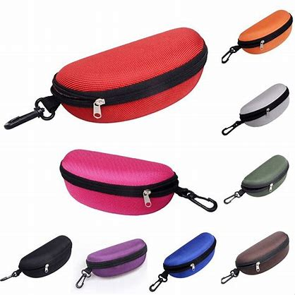

The
Glasses Bag
is a flexible and convenient accessory that can be used with a variety of eyewear styles, including glasses, sunglasses, and reading glasses. The bag is designed to be
soft and flexible, allowing it to conform to the shape of your eyewear and provide a snug and protective fit.
The bag also features a secure and
adjustable drawstring closure, ensuring that your eyewear stays securely in place.